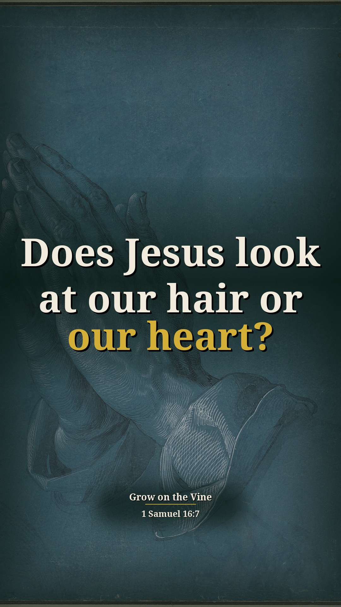
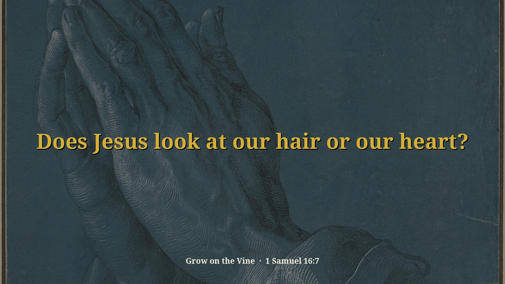
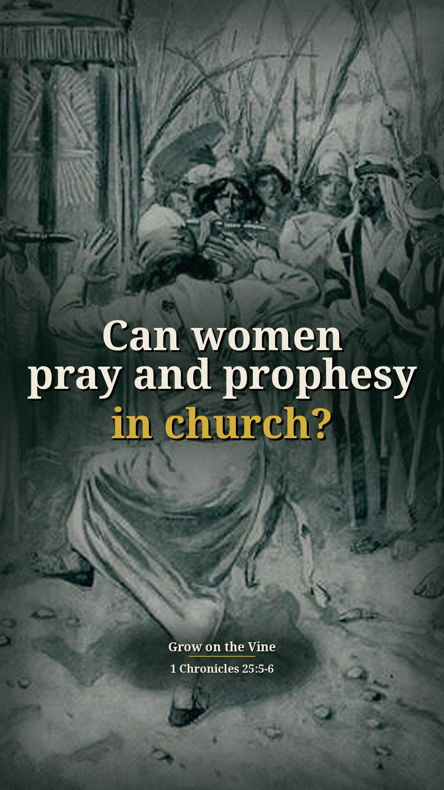
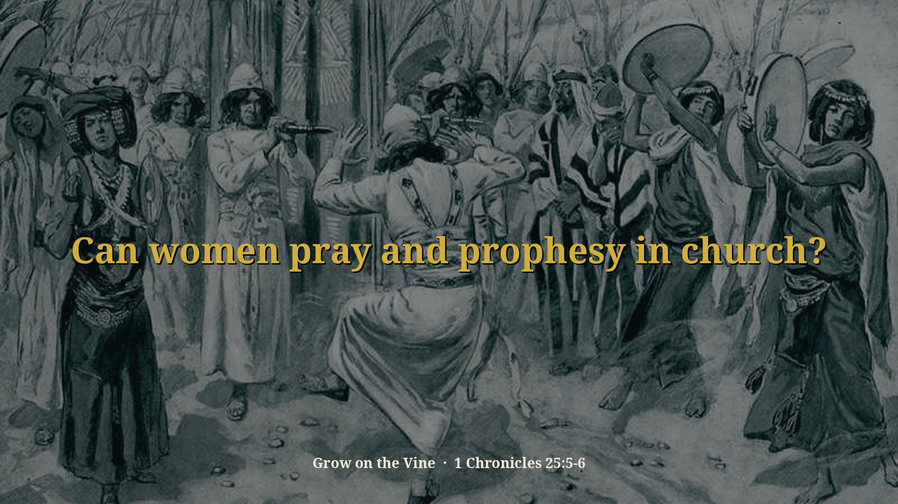
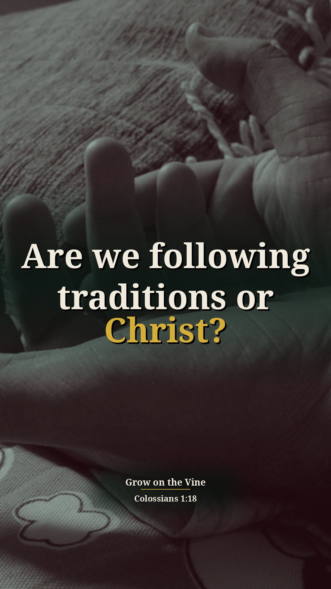
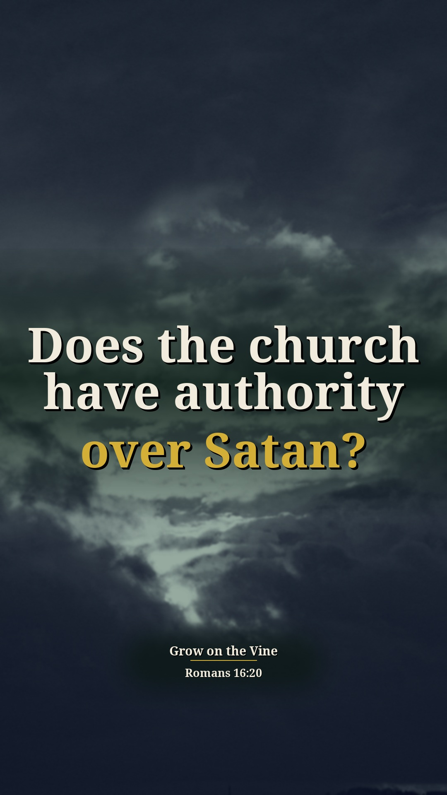
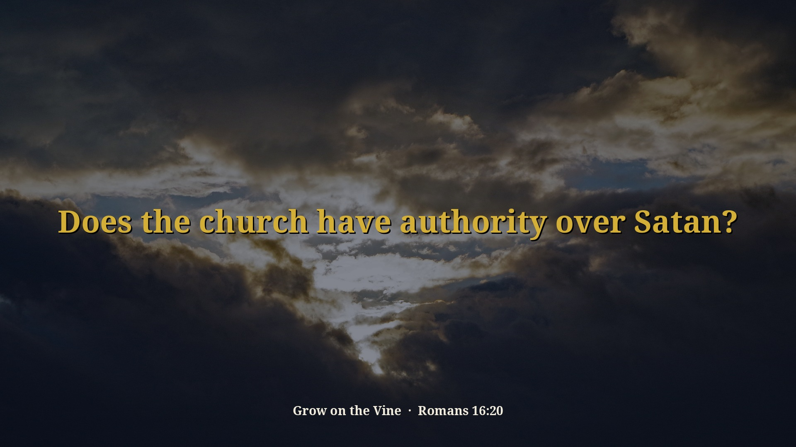

To Cover or Not to Cover Part 1 — 8 illustrated Shorts (preview)
Preview only, not posted anywhere. Source: 75xNMCiRsD8 · Pastor David G. Kincer. Each card follows the clip-page order: video → short answer → his words → Scripture (NKJV) → full message.
Does Jesus care if a woman wears a veil?
Watch the clip
Our short summary of this clip, not the preacher's exact words
Short answer: He says Paul is talking about husbands and wives, not single women, and that Jesus doesn't care whether she has a veil on when she prays or prophesies. It's the husband who wants the symbol of authority and created the shame.
Why: 1 Corinthians 11:5 speaks of a woman who prays or prophesies; he teaches her "head" is her husband and Jesus.
“He's talking about husband and wife. Not talking about single women at all.”
▶ 23:21
“You think Jesus cares whether I got this on or not? He could care the least. Veils don't mean anything to him.”
▶ 24:36
“So who's it really bothering? The husband who came up with this idea in the first place.”
▶ 24:57
“Well, you created the embarrassment. You created the shame.”
▶ 25:30
1 Corinthians 11:5 But every woman who prays or prophesies with her head uncovered dishonors her head, for that is one and the same as if her head were shaved.
Full sermon: To Cover or Not to Cover Part 1 — full message page
Other title options:
- Who is really bothered by an uncovered wife?
- Is 1 Corinthians 11 about every woman?
YouTube description (draft)
Does Jesus care if a woman wears a veil? Read the short answer, the Scripture (NKJV) and the pastor's own words: https://growonthevine.com/clips/does-jesus-care-if-a-woman-wears-a-veil/ To see the full message, click here: https://www.youtube.com/watch?v=75xNMCiRsD8&t=1390s He says Paul is talking about husbands and wives, not single women, and that Jesus doesn't care whether she has a veil on when she prays or prophesies. It's the husband who wants the symbol of authority and created the shame. 1 Corinthians 11:5 (NKJV) Pastor David G. Kincer · Grow on the Vine Music: "Dreamer" Kevin MacLeod (incompetech.com) Licensed under Creative Commons: By Attribution 4.0 License http://creativecommons.org/licenses/by/4.0/ #Shorts #Bible #Jesus
Does Jesus look at our hair or our heart?
Watch the clip
Our short summary of this clip, not the preacher's exact words
Short answer: He says Jesus doesn't care if a woman is bald, from little hair to chemotherapy; Jesus looks at the heart, and it's the man it bothers. Our real covering is the Lord Jesus Christ and His authority.
Why: Psalm 140:7: "You have covered my head in the day of battle." He says God looks at the heart (compare 1 Samuel 16:7).
“Now, does Jesus care if a woman's baldheaded or not? No. Jesus looks at the heart.”
▶ 25:47
“You ever seen a person that had to take chemotherapy? They're baldheaded. You think that bothers Christ?”
▶ 26:16
“We have got to have the Lord Jesus Christ and his authority covering us. And that's our covering.”
▶ 32:02
1 Samuel 16:7 But the LORD said to Samuel, “Do not look at his appearance or at his physical stature, because I have refused him. For the LORD does not see as man sees; for man looks at the outward appearance, but the LORD looks at the heart.”
Psalm 140:7 O GOD the Lord, the strength of my salvation, You have covered my head in the day of battle.
Full sermon: To Cover or Not to Cover Part 1 — full message page


Other title options:
- Does Jesus care if a woman is bald?
- What really covers us?
YouTube description (draft)
Does Jesus look at our hair or our heart? Read the short answer, the Scripture (NKJV) and the pastor's own words: https://growonthevine.com/clips/does-jesus-care-if-a-woman-is-bald/ To see the full message, click here: https://www.youtube.com/watch?v=75xNMCiRsD8&t=1542s He says Jesus doesn't care if a woman is bald, from little hair to chemotherapy; Jesus looks at the heart, and it's the man it bothers. Our real covering is the Lord Jesus Christ and His authority. 1 Samuel 16:7 (NKJV) Pastor David G. Kincer · Grow on the Vine Music: "Touching Moments Two Higher" Kevin MacLeod (incompetech.com) Licensed under Creative Commons: By Attribution 4.0 License http://creativecommons.org/licenses/by/4.0/ #Shorts #Bible #Jesus
Can women pray and prophesy in church?
Watch the clip
Our short summary of this clip, not the preacher's exact words
Short answer: He says the first thing Paul establishes is that women can pray and prophesy, and you can't prophesy with your mouth shut. Heman's three daughters prophesied with song and instruments for the service of the house of the Lord.
Why: 1 Corinthians 11:5 and 1 Chronicles 25:5–6: Heman's fourteen sons and three daughters were all for the music in the house of the Lord.
“Now, the first thing that Paul established here in these verses is, women can pray and prophesy.”
▶ 26:47
“He's establishing that women can be involved in the church.”
▶ 27:27
“See women could sing, they could prophesy in song.”
▶ 29:32
1 Corinthians 11:5 But every woman who prays or prophesies with her head uncovered dishonors her head, for that is one and the same as if her head were shaved.
1 Chronicles 25:5-6 All these were the sons of Heman the king’s seer in the words of God, to exalt his horn. For God gave Heman fourteen sons and three daughters. All these were under the direction of their father for the music in the house of the LORD, with cymbals, stringed instruments, and harps, for the service of the house of God. Asaph, Jeduthun, and Heman were under the authority of the king.
Full sermon: To Cover or Not to Cover Part 1 — full message page


Other title options:
- Did David's singers include daughters?
- Must women always keep silent?
YouTube description (draft)
Can women pray and prophesy in church? Read the short answer, the Scripture (NKJV) and the pastor's own words: https://growonthevine.com/clips/can-women-pray-and-prophesy-in-church/ To see the full message, click here: https://www.youtube.com/watch?v=75xNMCiRsD8&t=1607s He says the first thing Paul establishes is that women can pray and prophesy, and you can't prophesy with your mouth shut. Heman's three daughters prophesied with song and instruments for the service of the house of the Lord. 1 Chronicles 25:5-6 (NKJV) Pastor David G. Kincer · Grow on the Vine Music: "Simple Duet" Kevin MacLeod (incompetech.com) Licensed under Creative Commons: By Attribution 4.0 License http://creativecommons.org/licenses/by/4.0/ #Shorts #Bible #Jesus
Who should we really follow?
Watch the clip
Our short summary of this clip, not the preacher's exact words
Short answer: He says we are to follow Jesus Christ, not any religious founder, famous preacher or church label; follow Paul only as he follows Christ. Jesus did no sin and taught only the Scriptures, so preachers should preach the Scriptures, not opinion or church doctrine.
Why: 1 Corinthians 11:1: "Imitate me, just as I also imitate Christ."
“He says, be you followers, imitators of me, even as I also am of Christ.”
▶ 1:28
“We are to follow who? Jesus Christ.”
▶ 2:35
“We get our eyes off Christ and we get our eyes on other things and we have problems.”
▶ 2:43
“Follow me as I follow him, and if I don't follow Jesus, don't follow me, is what he's saying.”
▶ 2:57
“Jesus only taught and lived by the Word of God. He taught the Scriptures. He didn't teach other books.”
▶ 3:12
“Preachers should be preaching the Scriptures, not their opinion or some church doctrine.”
▶ 3:36
1 Corinthians 11:1 Imitate me, just as I also imitate Christ.
Luke 4:16 So He came to Nazareth, where He had been brought up. And as His custom was, He went into the synagogue on the Sabbath day, and stood up to read.
Full sermon: To Cover or Not to Cover Part 1 — full message page
Other title options:
- Did Jesus only teach the Scriptures?
- Should we follow famous preachers?
YouTube description (draft)
Who should we really follow? Read the short answer, the Scripture (NKJV) and the pastor's own words: https://growonthevine.com/clips/who-should-we-really-follow/ To see the full message, click here: https://www.youtube.com/watch?v=75xNMCiRsD8&t=84s He says we are to follow Jesus Christ, not any religious founder, famous preacher or church label; follow Paul only as he follows Christ. Jesus did no sin and taught only the Scriptures, so preachers should preach the Scriptures, not opinion or church doctrine. 1 Corinthians 11:1 (NKJV) Pastor David G. Kincer · Grow on the Vine Music: "Faith In Tomorrow" by Sascha Ende, licensed under CC BY 4.0 (https://creativecommons.org/licenses/by/4.0/) #Shorts #Bible #Jesus
What kind of people does Jesus make?
Watch the clip
Our short summary of this clip, not the preacher's exact words
Short answer: He says there is no record of the apostles misusing money, immorality, complaining, dividing or quitting; that's the kind of people Jesus makes. And even the crude Corinthian church changed when Paul corrected them, so when we hear truth, let's change.
Why: 1 Corinthians 11:1–2.
“There's no record of these guys misusing church money.”
▶ 5:32
“They kept preaching and serving God all the days of their life till their hearts stopped.”
▶ 6:17
“These guys were powerful. That's the kind of people Jesus makes.”
▶ 6:36
“When Paul would come and correct them and teach them they would change and he honored them for it.”
▶ 7:32
“You know, we might have some errors but goodness when we hear truth, let's change.”
▶ 7:47
1 Corinthians 11:1 Imitate me, just as I also imitate Christ.
1 Corinthians 11:2 Now I praise you, brethren, that you remember me in all things and keep the traditions just as I delivered them to you.
Full sermon: To Cover or Not to Cover Part 1 — full message page
Other title options:
- Will we change when we hear the truth?
- Did the apostles ever quit?
YouTube description (draft)
What kind of people does Jesus make? Read the short answer, the Scripture (NKJV) and the pastor's own words: https://growonthevine.com/clips/what-kind-of-people-does-jesus-make/ To see the full message, click here: https://www.youtube.com/watch?v=75xNMCiRsD8&t=313s He says there is no record of the apostles misusing money, immorality, complaining, dividing or quitting; that's the kind of people Jesus makes. And even the crude Corinthian church changed when Paul corrected them, so when we hear truth, let's change. 1 Corinthians 11:1 (NKJV) Pastor David G. Kincer · Grow on the Vine Music: "Clean Soul" Kevin MacLeod (incompetech.com) Licensed under Creative Commons: By Attribution 4.0 License http://creativecommons.org/licenses/by/4.0/ #Shorts #Bible #Jesus
Can traditions rob you of God's Word?
Watch the clip
Our short summary of this clip, not the preacher's exact words
Short answer: He says leaders made up their own laws and we will take tradition over the Word of God, which nullifies it. Like a bandit, people capture your mind through philosophy and the traditions of men, so be careful what rules you follow.
Why: Mark 7:8 and Colossians 2:8.
“They made up their own laws.”
▶ 8:35
“Some people will die for church leaders that make up their own rules. And they're not in the Bible.”
▶ 8:44
“In fact, we will take tradition over the Word of God and it nullifies and neutralizes the Word of God.”
▶ 9:00
“Like a bandit, you know, they come and they rob you.”
▶ 9:37
“He says, beware, lest any man capture you through philosophy. They're going to capture your mind.”
▶ 9:43
“And we got to be careful what rules we're following.”
▶ 10:17
Mark 7:8 For laying aside the commandment of God, you hold the tradition of men—the washing of pitchers and cups, and many other such things you do.”
Colossians 2:8 Beware lest anyone cheat you through philosophy and empty deceit, according to the tradition of men, according to the basic principles of the world, and not according to Christ.
Full sermon: To Cover or Not to Cover Part 1 — full message page
Other title options:
- Can tradition cancel God's Word?
- Can philosophy rob you?
YouTube description (draft)
Can traditions rob you of God's Word? Read the short answer, the Scripture (NKJV) and the pastor's own words: https://growonthevine.com/clips/can-traditions-rob-you-of-gods-word/ To see the full message, click here: https://www.youtube.com/watch?v=75xNMCiRsD8&t=507s He says leaders made up their own laws and we will take tradition over the Word of God, which nullifies it. Like a bandit, people capture your mind through philosophy and the traditions of men, so be careful what rules you follow. Colossians 2:8 (NKJV) Pastor David G. Kincer · Grow on the Vine Music: "Wholesome" Kevin MacLeod (incompetech.com) Licensed under Creative Commons: By Attribution 4.0 License http://creativecommons.org/licenses/by/4.0/ #Shorts #Bible #Jesus
Are we following traditions or Christ?
Watch the clip
Our short summary of this clip, not the preacher's exact words
Short answer: He says our own "this is what I believe" traditions hurt us and rob us of the things of Christ. Jesus is the real pastor and head of the church; when a pastor or husband asks you to violate Christ's rules, you follow Christ.
Why: Mark 7:9 and Colossians 1:18.
“We come up with our own. This is what I believe.”
▶ 10:46
“And it hurts us. It can destroy our life and it robs us of the things of Christ.”
▶ 10:54
“And man, we want to be the best in that group.”
▶ 11:26
“He's the real pastor. Us preachers are just delegated, you know, blabber mouths, really.”
▶ 16:40
“And so when a pastor violates the customs, traditions and rules of Christ, we're not to follow them.”
▶ 16:52
“When a husband asks the wife to do something that violates the authority of Christ, she can't do that.”
▶ 17:24
Mark 7:9 He said to them, “All too well you reject the commandment of God, that you may keep your tradition.
Galatians 1:14 And I advanced in Judaism beyond many of my contemporaries in my own nation, being more exceedingly zealous for the traditions of my fathers.
Colossians 1:18 And He is the head of the body, the church, who is the beginning, the firstborn from the dead, that in all things He may have the preeminence.
Full sermon: To Cover or Not to Cover Part 1 — full message page

Other title options:
- Are our own traditions hurting us?
- Who is the real pastor?
YouTube description (draft)
Are we following traditions or Christ? Read the short answer, the Scripture (NKJV) and the pastor's own words: https://growonthevine.com/clips/are-we-following-traditions-or-christ/ To see the full message, click here: https://www.youtube.com/watch?v=75xNMCiRsD8&t=628s He says our own "this is what I believe" traditions hurt us and rob us of the things of Christ. Jesus is the real pastor and head of the church; when a pastor or husband asks you to violate Christ's rules, you follow Christ. Colossians 1:18 (NKJV) Pastor David G. Kincer · Grow on the Vine Music: "Crinoline Dreams" Kevin MacLeod (incompetech.com) Licensed under Creative Commons: By Attribution 4.0 License http://creativecommons.org/licenses/by/4.0/ #Shorts #Bible #Jesus
Does the church have authority over Satan?
Watch the clip
Our short summary of this clip, not the preacher's exact words
Short answer: He says Satan can do nothing without Christ's permission and the church has delegated authority over him, so don't let him chase you all week. But you can't just name it and claim it: if it's not the Father's will, nothing happens.
Why: Romans 16:20 and Mark 4:39.
“Satan can do nothing without Christ's permission.”
▶ 18:39
“Get him under there and step on him and keep him down and get moving.”
▶ 19:09
“I hate these testimonies. Satan has been chasing me all week long.”
▶ 19:14
“Jesus has direct authority over the elements. That's why he could say peace be still and the storm is still.”
▶ 20:52
“You can't just go name it and claim it.”
▶ 21:07
“If it's not in the will of the Father, ain't nothing going to happen.”
▶ 21:17
Romans 16:20 And the God of peace will crush Satan under your feet shortly. The grace of our Lord Jesus Christ be with you. Amen.
Mark 4:39 Then He arose and rebuked the wind, and said to the sea, “Peace, be still!” And the wind ceased and there was a great calm.
Full sermon: To Cover or Not to Cover Part 1 — full message page


Other title options:
- Should Satan be chasing you all week?
- Can you just name it and claim it?
YouTube description (draft)
Does the church have authority over Satan? Read the short answer, the Scripture (NKJV) and the pastor's own words: https://growonthevine.com/clips/does-the-church-have-authority-over-satan/ To see the full message, click here: https://www.youtube.com/watch?v=75xNMCiRsD8&t=1115s He says Satan can do nothing without Christ's permission and the church has delegated authority over him, so don't let him chase you all week. But you can't just name it and claim it: if it's not the Father's will, nothing happens. Romans 16:20 (NKJV) Pastor David G. Kincer · Grow on the Vine Music: "Stoic Morning" Kevin MacLeod (incompetech.com) Licensed under Creative Commons: By Attribution 4.0 License http://creativecommons.org/licenses/by/4.0/ #Shorts #Bible #Jesus